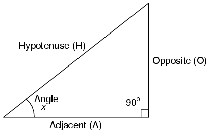
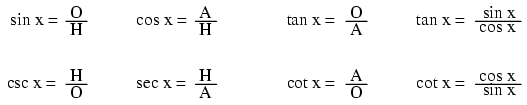
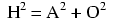
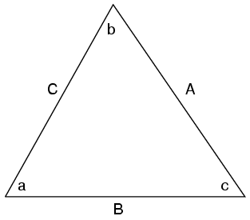
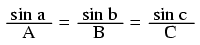
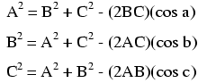
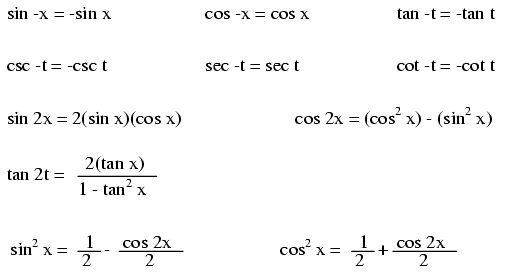
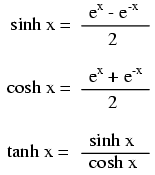

Lecciones de circuitos eléctricos - Volumen V
Capítulo 5
REFERENCIA DE TRIGONOMETRÍA
- Right triangle trigonometry
- Non-right triangle trigonometry
- Trigonometric equivalencies
- Hyperbolic functions
- Contributors
Right triangle trigonometry

A triangulo rectángulose define como tener un ángulo exactamente igual a 90o (a ángulo recto).
Trigonometric identities

H es elHipotenusa, siendo siempre opuesto al ángulo recto. En relación con el ángulo x, O es elOpuestoy A es elAdyacente.
Las funciones de "arco" como "arcsin", "arccos" y "arctan" son complementos de las funciones trigonométricas normales. Estas funciones devuelven un ángulo para una entrada de relación. Por ejemplo, si la tangente de 45oes igual a 1, entonces la "arctangente" (arctan) de 1 es 45o. Las funciones de "arco" son útiles para encontrar ángulos en un triángulo rectángulo si se conocen las longitudes de los lados.
The Pythagorean theorem

Non-right triangle trigonometry

The Law of Sines (for anytriángulo)

The Law of Cosines (for anytriángulo)

Trigonometric equivalencies

Hyperbolic functions

Nota: todos los ángulos (x) deben expresarse en unidades deradianespara estas funciones hiperbólicas. Hay 2π radianes en un círculo (360o).
Contributors
Los contribuyentes a este capítulo se enumeran en orden cronológico de sus contribuciones, desde el más reciente hasta el primero. Consulte el Apéndice 2 (Lista de colaboradores) para fechas e información de contacto.
Harvey Lew(??? 2003): Error tipográfico corregido: "tangente" debería haber sido "cotangente".
Lecciones en circuitos eléctricoscopyright (C) 2000-2023 Tony R. Kuphaldt, según los términos y condiciones delCC BY License.